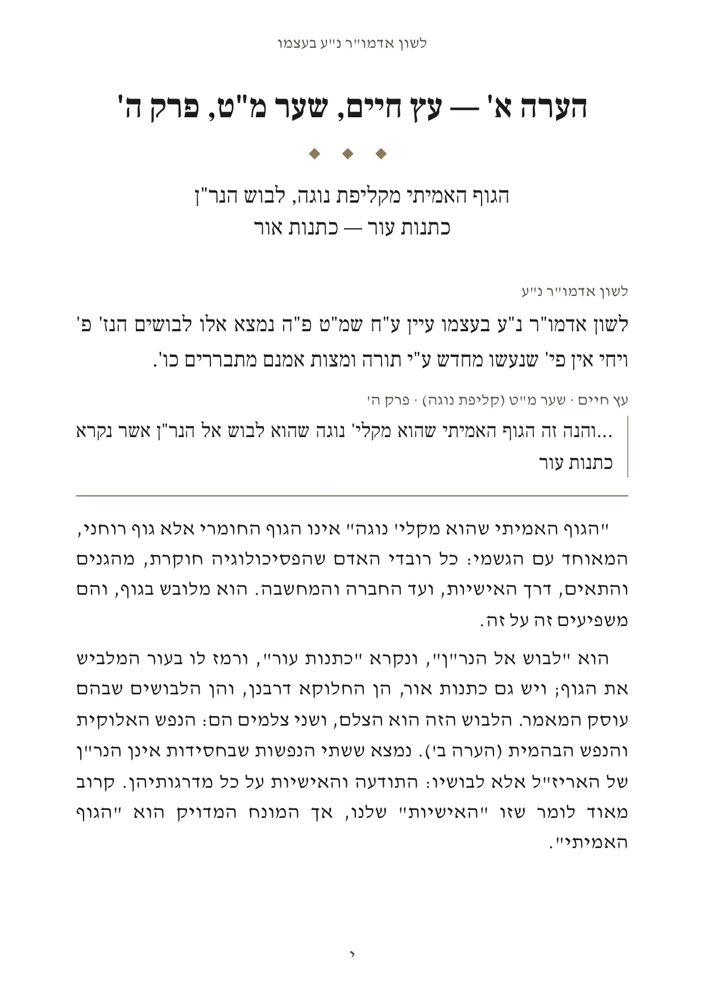
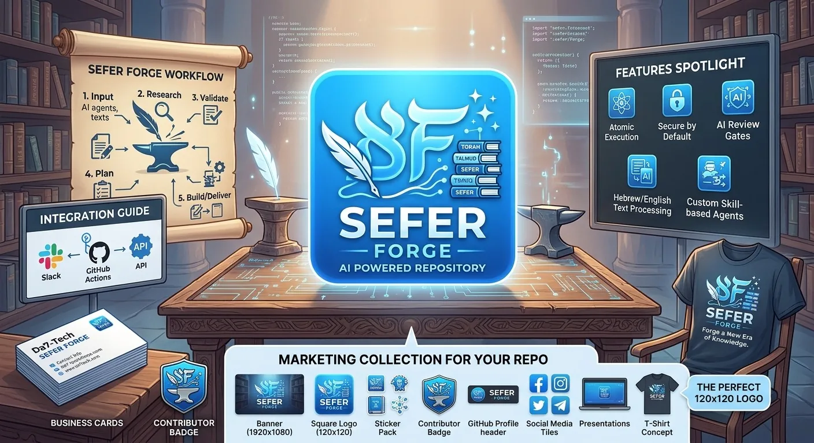

Sefer Forge
The inner Torah, explained with exactness and taught with life.
Sefer Forge researches, explains and translates the inner dimension of the Torah, פנימיות התורה: the Kabbalah of the Arizal and the teachings of Chassidus. It turns that work into what a teacher and a learner can use: printed books and pamphlets, packs of the sources, translations, class materials and narrated lessons. Every quotation is exact, and every source is set in beside the words that cite it.
What has been made so far
What it makes
Explanations
A text of the inner Torah explained from itself and its sources, the passages quoted exactly, with what each idea means in the person.
Books and pamphlets
A sefer and a teacher's explanation become a print-ready page: the text on top, its explanation below.
Reading packs
Every source a text cites, set out under its citation, the words it refers to highlighted.
Translations
Hebrew into English and French, sentence by sentence, checked against the Hebrew; more languages to follow.
Narrated lessons
The texts read aloud, with subtitles and chapters, published as videos.
Why this work
The texts that give prayer and the mitzvot their inner meaning are the hardest to enter
Etz Chaim, Pri Etz Chaim and Shaar HaKavanot say what happens in every part of the morning prayer, in every mitzvah, in the soul that performs it. The discourses of Chassidus bring that teaching into the heart of the one who prays. Most people who pray every day have never been able to read them.
Language
The sources are in dense Hebrew and Aramaic, full of abbreviations and terms that are never defined where they appear. Most of them have no translation at all.
Exactness
Explanations that exist often paraphrase without showing the source. Here every claim is tied to the words it rests on, quoted letter for letter, so a reader can check it.
Life
Knowing what a prayer does above is half of it. Each idea is also explained as it is in the person: what it asks of the one who prays, and what it gives.
The work, page by page
כוונות תפילת השחר על פי האר"י ז"ל
ביאור יסודי · שער הכוונות ופרי עץ חיים
The intentions of the morning prayer after the Arizal: a foundational explanation
The morning prayer, in the writings of the Arizal, is one order from beginning to end: the four worlds are repaired each in its place, rise and are bound together up to the highest union, and the flow drawn from it is brought down again. This explanation follows that order step by step, from waking and washing the hands, through the tzitzit, the tefillin, the offerings, the Kaddish and Pesukei deZimra, to the blessings of Shema and Kriat Shema.
At each step the passage of Shaar HaKavanot or Pri Etz Chaim is set in exactly as it is printed, the words the explanation rests on highlighted. Beside each idea, set apart under בנפש האדם, is what it is in the soul of the one who prays. A second level, after the Rashash, is being written on top of it.
- Sources
- Shaar HaKavanot, Pri Etz Chaim
- Written
- the introduction and sections 1–8 of 13
- Passages set in
- 110, quoted letter for letter
- Explanation
- 197 numbered paragraphs, 67 pages
- Levels
- after the Arizal; after the Rashash (in progress)
לשון אדמו"ר נ"ע בעצמו
לבושי הנשמה · מקורותיו בעץ חיים · ביאור
The garments of the soul: a gloss, its sources in Etz Chaim, and an explanation
The Zohar teaches that by keeping Torah and mitzvot a person makes garments for the soul, in which it enjoys the radiance of the Shechinah in the World to Come. It sounds as though Torah and mitzvot are themselves the garments. A short gloss, in the Alter Rebbe's own words, asks what the garments really are, citing Etz Chaim and Pri Etz Chaim at every turn: they are not made anew by Torah and mitzvot, but refined and repaired.
The project went through the whole process: the text from a digital edition, a reading pack of its citations, four recordings, and for each note paired pages and a teaching pass. It grows one note (הערה) at a time, one for each box of the reading pack.
- Text
- digital edition, chabadlibrary.org
- Sources set out
- 26 citations of Etz Chaim and Pri Etz Chaim; 9 more works listed
- Recordings
- 4, about 20 minutes, in Hebrew
- Sessions
- 3: the introduction, note א, note ב
- Pamphlet
- A5, 18 pages
- Reading pack
- A4, 13 pages
Turn the pages
Every page as printed: the explanation of the morning prayer (chosen pages), and the whole pamphlet and reading pack of the garments of the soul. Click a page to see it at full size; use the arrows, the thumbnails or your keyboard to turn.
Anatomy of a page

1 2 3 4 5- Running head and Hebrew page numbers. The title on every page; א, ב, ג at the foot.
- The note's heading. Its letter, the source it explains (עץ חיים, שער מ"ט, פרק ה') and its subject.
- The text. The stretch of the gloss this page explains, labelled לשון אדמו"ר נ"ע.
- The source. The Etz Chaim passage the gloss cites, set apart by a rule, with its gate and chapter.
- The explanation. The recorded explanation, cleaned, made written and condensed by the teaching pass. Each paragraph opens with the words it explains.
Behind the pages: the trail of note א
In the teacher's lessons, every step leaves a file in the repository, so any sentence on the page can be traced back to the recording.
references.yamlthe reading pack's plan: each citation and its passage
ocr.mdthe note's stretch of the text, and its Etz Chaim passage
voicenotes/Whisper's transcript, plain and timed (the audio stays home)
ocr-match.mdwhich printed words were read aloud, and when
commentary.mdthe faithful transcript, with its passes listed above it
review.mdevery word changed against Whisper
section-plan.yamlwhere the text is cut, and what each explanation covers
teaching-notes.mdthe note understood in writing before it is rewritten
section.teaching.mdthe page as it prints
The program ahead
What your support builds
The samples above show the method working. The program takes it across the inner Torah, into the prayer book, and into other languages, and hands teachers finished materials to teach from.
Research and explanation
Explanations of the texts of the inner Torah (the writings of the Arizal and the discourses of Chassidus) at the level of careful scholarship: written from the text and its sources, every passage quoted exactly, every citation set in, checked independently before it is printed.
Tefillah with meaning
The whole morning prayer, then the weekday, Shabbat and festival prayers, each part explained in what it does and in what it means for the one who prays; at more than one level, so a beginner and a scholar each have a way in.
Life in Torah and mitzvot
The same work on the mitzvot and the daily practices: tzitzit, tefillin, the blessings, the Shema. What each one is, from the sources, and what it gives the person who keeps it.
Translation
English and French first, then Spanish, Russian and others: translated sentence by sentence from the Hebrew, terms kept consistent by a fixed table, and checked against the Hebrew by script so that nothing is dropped or added.
Teaching packages
For each text, a set a teacher can use tomorrow: the explanation in print, a reading pack of its sources, a class handout, a pamphlet, and a narrated lesson with subtitles.
Open technology
The tools that make this possible, built in the open: reading Hebrew sefarim from photographs, Hebrew speech-to-text for recorded shiurim, a lexicon of the terms grounded in their sources, and the typesetting and proofing of every page.
Partner with us
Ways to take part
Where the money goes
- 35% Research, development and AI. Writing the explanations from the sources, and the tools that make them: reading sefarim from photographs, Hebrew speech-to-text, the lexicon, the checks, and the computing they run on.
- 30% Printing booklets. Booklets and pamphlets printed and bound for learners, classes and shuls.
- 15% Translation. English and French, then Spanish, Russian and other languages, each checked against the Hebrew.
- 10% Teaching and distribution. Class handouts, narrated lessons, and getting the materials to teachers and classes.
- 10% Hosting and overhead. The site, storage, publishing and administration.
Dedications
Every part of the program can be dedicated, in honor of someone or לעילוי נשמת a loved one, and the dedication can be printed in the work it supports.
A note or a lesson
One note (הערה) of an explanation, or one recorded shiur, carried through to print.
A section of the prayer
One part of the morning prayer (the tzitzit, the tefillin, Kriat Shema) explained, printed and taught.
A translation
A booklet, a pamphlet or an explanation in English, French, or a new language.
A narrated series
A series of narrated lessons or stories, with subtitles, for the channel and for classrooms.
A volume
A complete book: the explanation of the morning prayer, Shaar HaYichud, or a work of Chassidus with its sources.
A year of the program
Research, translation and teaching packages for a year, and the people and tools to make them.
We also welcome partners who give in other ways: institutions and teachers who want to use the materials, scholars who want to work on the texts, publishers, and technology partners (computing, voice, translation).
Talk with us
Tell us which part of the work speaks to you. We will send the samples that fit, a plan for the part you choose, and what it costs.
Write to usHow it is made
From a recorded lesson to a printed page
The teacher's lessons go through a process built to keep every printed word faithful to the text and to what was said. A teacher learns a text and explains it aloud. Sefer Forge turns the recording into a publication in which every page carries a passage of the original on top and the teacher's explanation of it below: faithful to what was said, and written to be read.
-
Take in the text
Photograph the pages of a sefer, or paste the text from a digital edition. The agent reads each photo in strips at full resolution, counts the lines and reads everything a second time; what it cannot read is flagged, never guessed.
ocr.md -
Set out its sources
Before recording, a reading pack sets every source the text cites under its citation: the passage from Etz Chaim or Pri Etz Chaim with the lines before and after, the words it refers to highlighted, quoted exactly from the texts kept in the repository.
references.yamlreading pack (PDF)
From the sample's reading pack: the text, citation 1, and the passage it points to. -
Record the explanation
The teacher reads the text aloud and explains it, in Hebrew, one note at a time, on a phone. Photos and recordings stay on the home machine: they are never committed or uploaded.
voicenotes/ -
Transcribe, locally
ivrit.ai's Hebrew Whisper (large-v3) runs on the home GPU, in about 0.9× the recording's length, saving as it goes so a crash loses nothing. A shared glossary corrects the mis-hearings that recur.
.raw.txt.timed.txtwhisper-fixes.yaml -
Match and clean
The transcript is matched against the printed words the speaker read aloud, which corrects both. It is cleaned only where the repository holds evidence (the text, the glossary, a verse being quoted). A doubtful word keeps its time so the author can listen again, and a report lists every word that changed.
ocr-match.mdcommentary.mdreview.md -
Pair text and explanation
A short plan cuts the text where its explanation begins, and the page is built from the plan: the passage on top, the explanation below.
section-plan.yamlsection.md -
Make it read as writing
Three passes, each kept as a list of changes that can be undone: readability (garbled words), style (spoken Hebrew made written) and teaching (the lesson rewritten as a commentary on the text, about half the length). The faithful transcript stays beside them, and the quoted readings never change.
edits:style:teaching:teaching-notes.md -
Print, proof, accept
A session prints as an A5 pamphlet; discourses gather into chapters and books (Word, through pandoc). Every PDF is proofed for fonts, colours, margins, stray markup, stranded headings and page numbers, then reviewed page by page, before it reaches the author for acceptance.
pamphlet (PDF)book (DOCX)proof-pdf.py
For technologists: an AI agent does the work, the repository keeps it honest
The work is done by Claude Code acting as an agent. The author names a goal (“new session”, “ingest session 3”, “teaching pass”, “proof the pamphlet”) and the agent carries out every step. It reads the photos, runs the scripts, writes the files, checks its own work, rebuilds, and reports what needs the author. Everything it knows lives in the repository, not in a chat, so every session starts from the same rules.
CLAUDE.md
What may never be edited, the file formats, and which skill answers which request.
prompts/
The full steps for each kind of session, the transcript review rules, and the readability, style and teaching passes.
.claude/skills/
Sixteen skills, one per workflow: new-session,
ocr-session, ingest-session,
references-pack, teaching-pass,
proof-pdf, build-book…
scripts/
The deterministic work (transcription, OCR strips, matching, building, printing, status), so the agent runs tools instead of improvising.
.claude/settings.json
After every edit of a session file a hook runs
check-session.py; an error goes straight back to the agent
before it moves on.
proof-pdf.py
Every PDF is held to docs/print-standard.md, then reviewed
spread by spread, before anyone is asked to accept it.
You say, the agent does
| “new session” + files | makes the session, starts Whisper in the background, begins the OCR |
|---|---|
| “references” | sets out every cited source as a reading pack |
| “ingest session” | OCR, match, clean, pair, the three passes, the pamphlet and its proof |
| “status” | where every session stands, and its next step |
| “assemble discourse”, “build book” | joins the sessions, places the chapter, renders the book |
| “grow the glossary” | proposes Whisper fixes from corrections made again and again |
Evidence, not invention
sessions/002/review.md (from the sample)
Whisper 887 words · cleaned 883 · replaced 32 · added 0
שעמם ט← שער מ"טכותנות← כתנותויבשם כותנות← וילבשם כתנות
Every word of the cleaned transcript traces back to what Whisper heard. A word added without a rule is an error, and the check reports it.
Where the author decides
- accepting a PDF;
- replacing a source of truth (a raw transcript, a finished OCR);
- overwriting hand-edited text;
- a change that would alter the argument;
- anything that leaves the machine or cannot be undone: merging, deleting, publishing.
Built to resume
Long steps run in the background. Every workflow picks up where it
stopped, after a crash, a restart or a week away:
session-status.py names each session's next step. Each
piece of work goes on a branch and reaches main through a
pull request.
From agentic to autonomous
- Assistedthe author, step by step
- Agentic sessionsname the goal; the agent runs the workflowtoday
- Event-drivena new recording starts its own session
- Scheduleda recurring run advances every mechanical step
- Autonomous, with gatesone pull request per piece; the author reviews and accepts
How Sefer Forge uses YouTube and Google Drive
Sefer Forge includes a publishing tool used only by the project's owner. Signed in with the owner's own Google account, it:
- uploads the project's narrated videos to the owner's YouTube channel, with their titles, descriptions, chapters and language, as private videos;
- adds each video to a playlist for its language on that channel;
- reads the channel's own list of uploads, to keep the project's record of what has been published;
- copies each episode's files to a folder in the owner's Google Drive, as a backup (it can see only the files it created there).
It does not read, change or delete anyone else's videos or files, and it is not offered as a service to other users. Details are in the privacy policy.

Learn more
Everything is open
The code, the rules the agent follows, and the files of every session are at github.com/Esoterics611/sefer-forge.